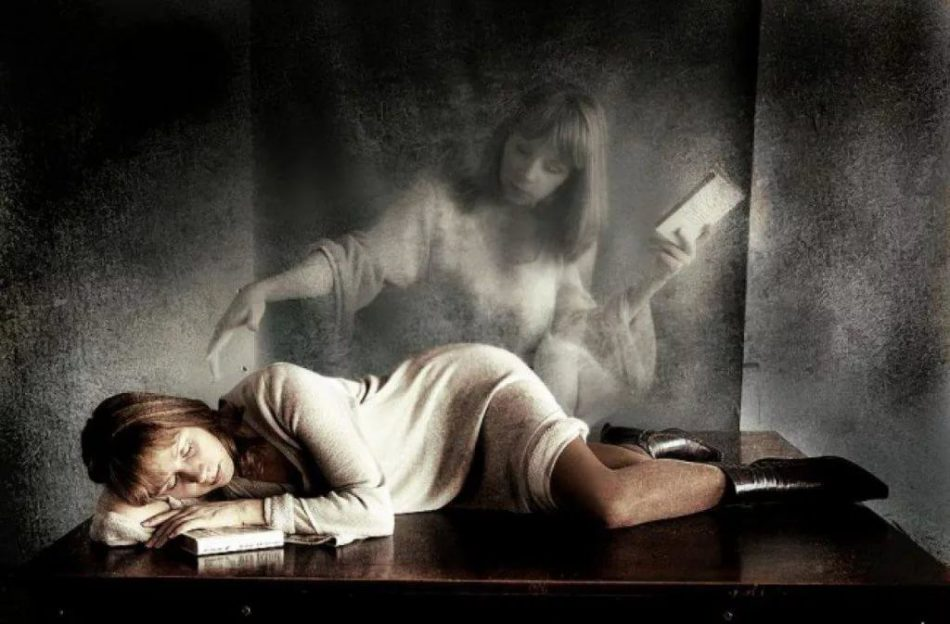

Статьи
Значение появления умерших родственников во снах
Сны — это загадочный и волшебный мир, в котором наши мысли, чувства и память соединяются в уникальном kaleidoscope изображений и ощущений. Особенно значимыми становятся сны, в которых появляются умершие родственники. Такие видения могут вызывать у нас сильные эмоции и оставлять глубокое впечатление.
Что символизирует появление умерших во снах?
Сны о покойниках часто рассматриваются как способ связи
с ушедшими близкими. Для многих такие сны могут быть
утешительными, они могут ощущаться как знак, что умерший
хочет передать что-то важное. Психологи утверждают, что такие
образы могут символизировать:
Необходимость прощения. Иногда сны об умерших могут указывать на неразрешенные конфликты или чувства вины, которые остались после их смерти.
Ощущение поддержки. Сновидения могут служить напоминанием о любви и заботе, которые человек получал от ушедшего родственника.
Сны с участием умерших родственников часто возникают в процессе горевания. Они могут помочь людям разобраться с потерей и начать процесс исцеления. Эмоциональная связь с ушедшими продолжает существовать, и такие сны могут быть формой взаимодействия с этой памятью.
Как интерпретировать такие сны?
Для правильной интерпретации снов о покойниках важно учитывать индивидуальный контекст и уникальные обстоятельства каждого человека. Ниже приведены несколько советов, которые могут помочь в этом процессе:
Запишите свои сны. Составление записей поможет лучше понять, как часто вы видите умерших, и какие эмоции они вызывают.
Обратите внимание на детали. Какие слова или изображения проявляются в снах? Нередко это может иметь ключевое значение для понимания их смысла.
Обсудите с кем-то. Порой разговор с другом или психологом позволяет взглянуть на ситуацию под другим углом.
Выводы
Появление умерших родственников во снах — это сложный и многогранный процесс, который может иметь глубокое значение для каждого отдельного человека. Такие сны могут служить как источником утешения, так и поводом для размышлений о чувствах, связанных с потерей. Важно помнить, что каждая такая встреча во сне — это уникальный шанс продолжить связь с ушедшим и разобраться в своих эмоциях.